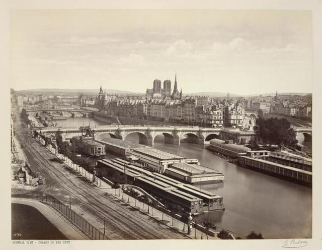
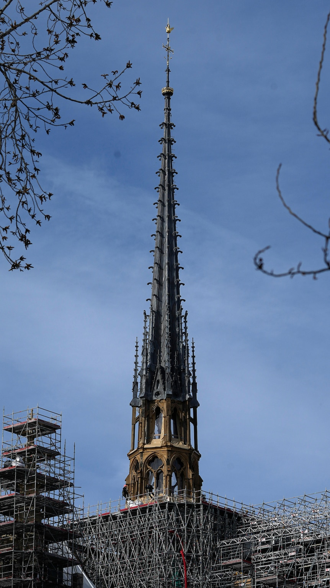

Notre-Dame de Paris isn't just a cathedral; it's a heartbeat of history, faith, and art, deeply intertwined with the soul of Paris. For over 850 years, it has weathered revolutions, witnessed the coronation of kings, and stood as a sanctuary for millions seeking awe and solace. But on that chilling evening in April 2019, as the flames devoured its iconic spire, the world held its breath. I remember watching the news, feeling an inexplicable ache for this architectural marvel that had stood so gracefully against time. This blog is my humble attempt to tell the story of Notre-Dame: its extraordinary past, the tragic fire, and the inspiring rebirth. Together, let’s explore the moments that have shaped its legacy, and the efforts to preserve it for generations to come.
Île de la Cité: A Journey Through Time
Home to three magnificent architectural monuments – Notre Dame Catherdral, Sainte-Chapelle, and the Conciergerie – Île de la Cité is also the birthplace of Paris. This island in the heart of the Seine River holds layers of history, spanning from Celtic settlements to revolutionary trials.
Early Begninnings
2,300 years ago, a Celtic tribe called the Parisii established a small settlement here. The Parisii were renowned traders, capitalizing on river trade routes throughout Europe. Their strategic location on the Seine made their island a natural hub for commerce.
Roman Influence
The first recorded mention of the island appears in Julius Caesar's Commentaries. In 53 BC, during the Gallic Wars, Caesar arrived in Lutetia and met with the leaders of the Gallic tribes. They initially submitted to Rome but soon after rebelled. Caesar dispatched one of his generals, Titus Labienus, to subdue the Parisii. The Parisii burned the bridges to impede his advance, but they were outmaneuvered and defeated in a battle on the Plain of Auteuil.
Medieval Power
By the medieval era, Île de la Cité had become the religious and political epicenter of Paris. The Palais de la Cité housed monarchs and their courts, with justice dispensed in its grand halls. But it was the construction of Notre-Dame Cathedral that truly solidified the island’s status as the heart of Christendom. Its towering spires and intricate carvings served as both a spiritual beacon and an architectural marvel, symbolizing Paris's growing influence across Europe.
Modern Marvels
Today, visitors to Île de la Cité can stroll along the Pont Neuf, the oldest standing bridge in Paris, and explore landmarks such as Sainte-Chapelle and the Conciergerie. The island feels like a time capsule, preserving layers of history spanning from Celtic rituals to revolutionary trials. At its heart stands Notre-Dame, the crown jewel of Île de la Cité, embodying centuries of faith, resilience, and artistic innovation. Sainte-Chapelle, with its stunning stained glass windows, is a masterpiece of Gothic architecture, while the Conciergerie serves as a reminder of the island's role in French justice and history.
Île de la Cité remains a vital part of Paris, attracting millions of visitors each year. It is a place where one can walk in the footsteps of Celts, Romans, kings, and revolutionaries, experiencing the rich tapestry of Parisian history.
The Vision of Maurice de Sully
The story of Notre-Dame de Paris is inseparable from the vision of Maurice de Sully, who became the Bishop of Paris in 1160. Maurice was born into humble beginnings but rose to prominence through his intellect and devotion to the Church. He envisioned a cathedral that would surpass all others, reflecting both the glory of God and the growing importance of Paris as a center of power and culture.
Maurice’s ambition was not without its rivals. Historical accounts suggest he may have been inspired—or even challenged—by the grandeur of the Basilica of Saint-Denis, a Gothic masterpiece located just outside Paris. Determined to create something even more extraordinary, Maurice personally oversaw the initial stages of Notre-Dame’s construction, laying the foundation for a project that would take nearly 200 years to complete.
Under Maurice’s leadership, Paris underwent significant changes to accommodate the cathedral. Streets were widened, older structures were demolished, and a grand plaza was created to emphasize Notre-Dame’s majesty. His vision extended beyond architecture; it reshaped the city itself, ensuring that Notre-Dame would remain at the spiritual and cultural heart of Paris for centuries to come.
The Rooster at the Spire
At the very top of Notre-Dame’s iconic spire stood a gilded rooster, a seemingly small detail but one imbued with profound symbolism. Inside the rooster were sacred relics, including a fragment of the Crown of Thorns, a relic of Saint Denis, and one of Saint Genevieve, the patron saint of Paris. These relics were believed to protect Paris from disasters, serving as a spiritual shield for the city.
During the 2019 fire, as the spire collapsed, many feared the rooster was lost forever. Miraculously, it was found among the rubble, slightly damaged but intact. In the ongoing restoration, the rooster has taken on new significance. It will now include the names of the brave firefighters who risked their lives to save the cathedral’s treasures, ensuring their heroic efforts are immortalized alongside the relics they worked to protect.
The Forest Beneath the Roof
Beneath Notre-Dame’s roof lay one of its most extraordinary features: a wooden framework known as “The Forest.” Constructed in the 12th and 13th centuries, The Forest was made from over 1,300 oak trees, each beam representing a single tree. This intricate lattice supported the lead roof and the towering spire, standing as a testament to the craftsmanship and ingenuity of medieval builders.
Tragically, The Forest was completely destroyed in the 2019 fire. Its loss was a devastating blow, not just to the structure but to the history it embodied. As restoration plans move forward, architects and engineers face a difficult decision: Should they recreate The Forest using traditional methods, or should they use modern materials to ensure greater fire resistance? Whichever path they choose, The Forest remains a symbol of the extraordinary effort and vision that went into building Notre-Dame.
The Cost of Building and Restoring Notre-Dame
The construction of Notre-Dame was an ambitious undertaking that spanned over 200 years, involving thousands of craftsmen, laborers, and artisans. In today’s terms, the cost of building Notre-Dame would amount to hundreds of millions of euros. The addition of the spire in the 19th century by Eugène Viollet-le-Duc was another significant expense, reflecting the ongoing efforts to enhance the cathedral’s grandeur.
After the 2019 fire, the restoration of Notre-Dame has become one of the most ambitious reconstruction projects in modern history. The estimated cost exceeds €850 million, with donations pouring in from around the world. Contributions came from individuals, corporations, and governments, highlighting Notre-Dame’s global significance. French President Emmanuel Macron’s promise to reopen the cathedral by 2024 reflects the determination to restore this iconic monument to its former glory.
Donations: A Global Effort
The restoration of Notre-Dame has united people across the globe in a shared mission to preserve this symbol of faith and culture. Major donors include French billionaires like François-Henri Pinault and Bernard Arnault, as well as contributions from international organizations and everyday citizens. In total, donations reached nearly €1 billion, demonstrating the universal love and respect for Notre-Dame.
Among the most touching stories are the contributions from schoolchildren, who organized fundraisers to support the cathedral’s restoration. These acts of kindness highlight Notre-Dame’s ability to inspire people of all ages and backgrounds, uniting them in a common cause.
Plan Your Visit to Notre-Dame
As restoration continues, you can still experience the magic of Notre-Dame through our exclusive guided tours. Explore its history, from the vision of Maurice de Sully to the heroism of 2019, and witness the incredible efforts to restore this beloved monument.
Discover the secrets of Notre-Dame! Book your Notre-Dame Cathedral tour today and witness the legacy of resilience, faith, and artistry that defines this global icon.
Conclusion: A Testament to Resilience
Notre-Dame de Paris is more than a cathedral—it’s a symbol of humanity’s ability to endure, rebuild, and inspire. From its humble beginnings under Maurice de Sully to its miraculous recovery after the 2019 fire, the cathedral continues to capture the hearts of millions. Its legacy transcends borders, reminding us of the importance of preserving our shared cultural heritage.
Plan your visit today and explore the magic of Notre-Dame with our expert-guided tours. Let this journey through history inspire you, just as it has inspired countless visitors over the centuries.